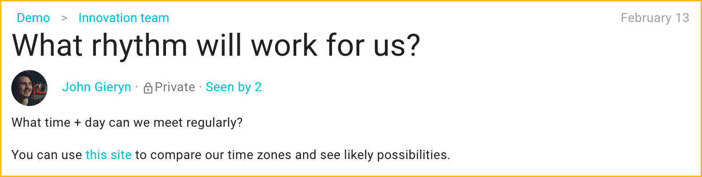
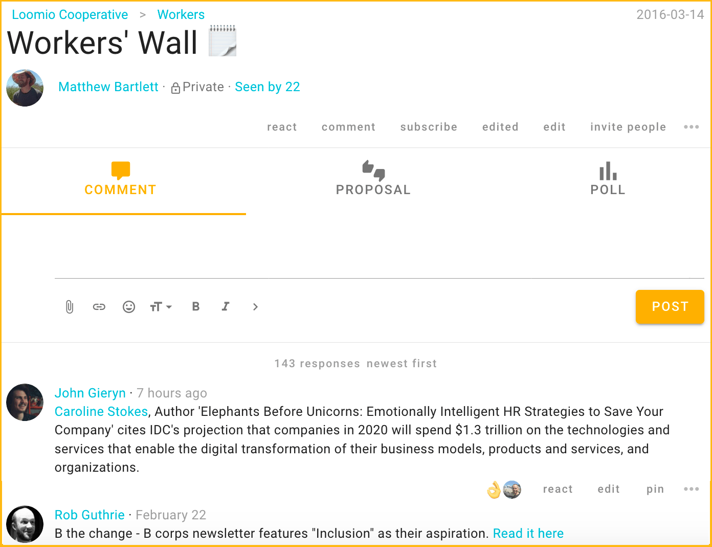
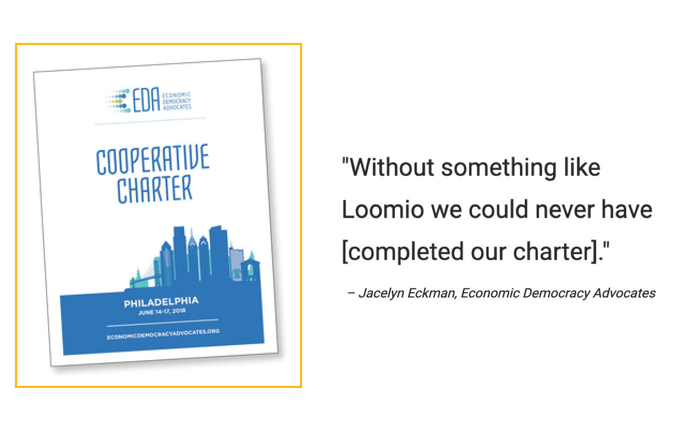
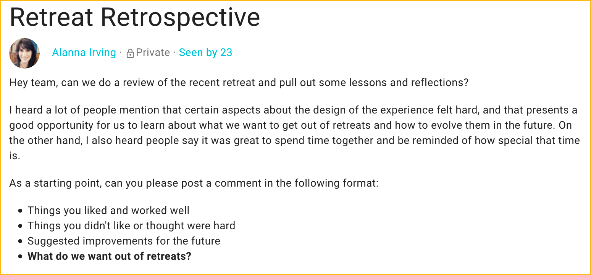
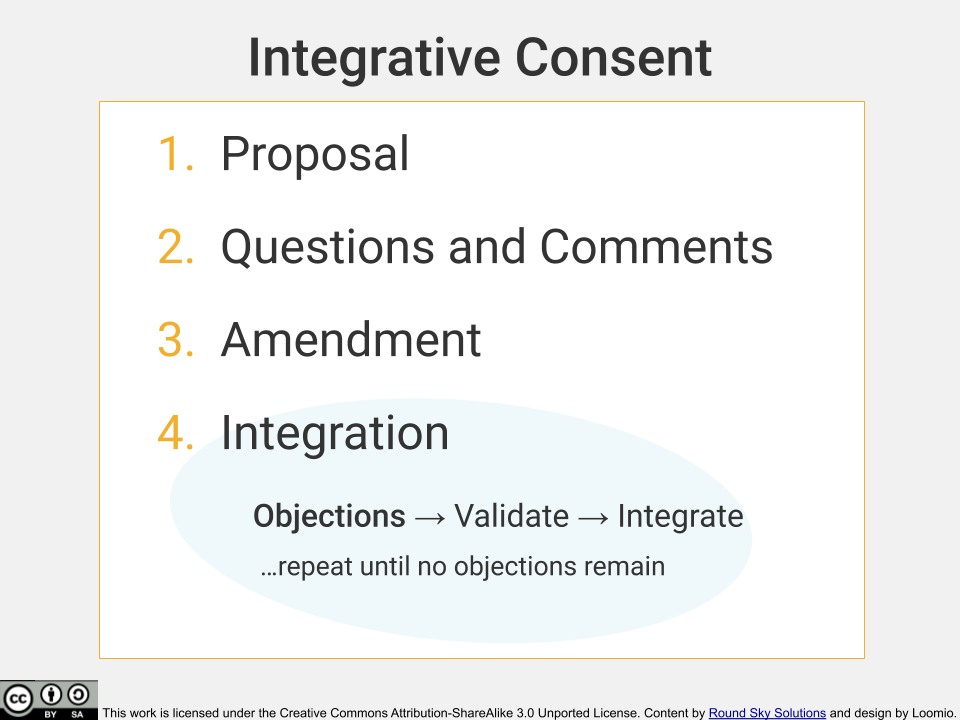
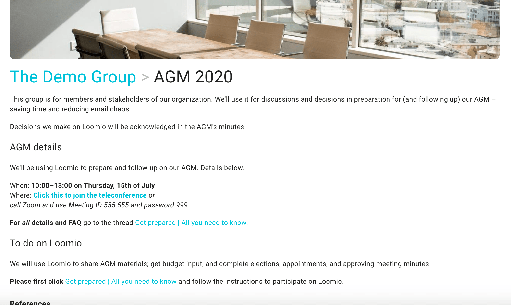
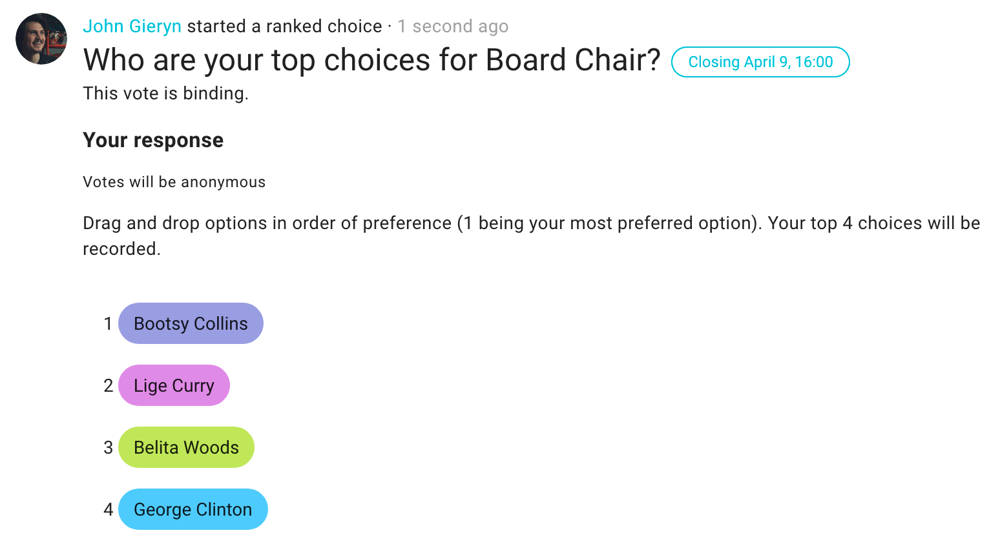
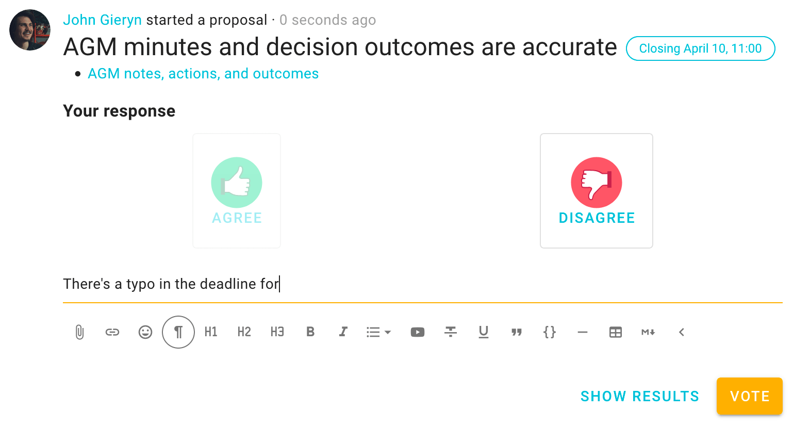
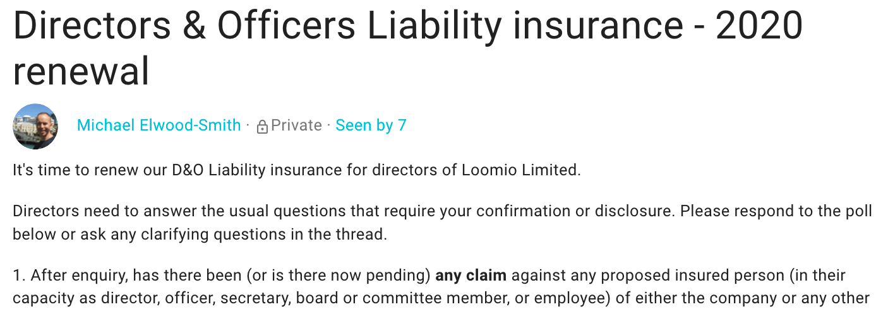

Guides to applying Loomio
This is a collection of guides to using Loomio well.
title: Four patterns of high-functioning groups weight: 40 description: How successful groups collaborate to achieve great outcomes. author: Michael Elwood-Smith categories:
- Articles and Interviews date: "2019-06-34T09:56:49Z" hidetoc: true menu: main: parent: guides name: 4 patterns of success
Why do some groups succeed, while others fail? This is the underlying question group coordinators and facilitators grapple with as they seek to help people do better work together.
From volunteer activist groups to companies to governance boards, in our work with people around the world, time and time again we see a few key factors that all successful groups have in common. So, what sets great groups apart from the rest?
1. Successful groups know their WHY
All successful groups share a common purpose that unites members in their contributions. Each member knows the WHY behind their efforts, which motivates them to bring their best selves to work.
Group spotlight
For over 30 years, Co-operative Assistance Network (CAN)’s purpose remained the same – helping people work better together through principles of democracy, autonomy, and concern for the community. CAN use Loomio to make collective decisions and to unite the group in their mission. Read more…
2. They share the same vision
High-functioning groups know exactly what they are set up to achieve and what the outcome looks like when their work is complete. They hold this vision even when they come across speedbumps on their journey.
Group spotlight
Zero Waste France’s vision is a sustainable planet without disposable plastic packaging, where citizens and society are mobilized to action. Zero Waste France use Loomio to organize campaigns, raise awareness and take action, achieving real outcomes in the process. Read more…
3. They are action-oriented
Great groups are intentional in their actions. They know exactly what work they need to do, by when, and who they need to help get this work done. They use online platforms like Loomio to stay organized and project management tools to get work done. Members report regularly on steps taken towards their goals and celebrate victories and milestones along the way.
Group spotlight
mondora, a cloud software development company practices a culture of openness and transparency, supporting every employee to fully participate in all aspects of the business. Mondora use Loomio to involve all employees in making decisions that affect the company. Read more…
4. They work on working well together
Like all relationships, maintaining good group dynamics requires hard work. Groups that prioritize their ties with each other tend to perform better than others.
Successful groups also try to involve all members in discussion. They invite diverse participation as they understand that this helps them to move through complexity.
Get our simple guide for supercharging your meetings.
They do regular check-ins to make sure that everyone is on the same page and feel heard and validated. They use tools like Loomio to make decisions and come to collective agreements together.
Group spotlight
3SG built a community of 200 people in the nonprofit sector, who collaborate on charitable projects. The 3SG team recently used Loomio to engage more members and include the voices of people who would otherwise be too shy to speak up. “It’s more democratic”. Read more…
Work better together with Loomio
Groups around the world use Loomio to achieve better outcomes with less time and effort. Loomio is an all-in-one platform where you can discuss, collaborate and make decisions as a team. Start a group on Loomio.
“Loomio has led to better decisions, higher engagement, fewer meetings, and faster implementation.”
Tip: Use your Loomio group page to describe your vision, why this group was set up (purpose), the outcomes you seek and how you would like people to engage.
Contact us
We love talking to people about the challenges of collaboration to achieve positive outcomes. Get in touch here.
5 powerful ways to use threads
Tried and true practices for productive communication.

This article will guide you through five powerful ways to use threads that have been tried and tested over the years by groups around the world.
- Ask a question
- Prepare for an event
- Take a document to completion
- Post things over time
- Report and reflect
- Make announcements (Bonus!)
Ask a question
Brainstorm, explore, open…

Most productive conversations start with questions (“divergence”, in our Facilitator Guide).
Start a new thread for each new inquiry; an inquiry can include several related questions. Use open questions to explore and get more engagement. Engage people directly by @mentioning them and asking them specifically. If you can, name any clear, shared outcome or understanding that results. As with any thread, a clear, simple title will help people find answers to engage now and reflect on down the road.
Tip: When scheduling, use a time poll to more easily gather responses and see what times align for even the largest groups.
Prepare for an event (or meeting)
Check in, propose, coordinate...

Preparing for events or meetings on Loomio saves you the frustration of several different conversations and resources being scattered across several email chains. Start one thread per event; for a board meeting you might use one thread to pick a date, collaborate on agenda-setting, post minutes, record actions & follow-up on actions. Edit the thread context, which always stays at the top, to let people know what kind of participation is being asked for right now. Especially if they missed the meeting… you can attach audio, link notes, or embed videos too, helping people to jump right into any ongoing conversation.
Tip: To ratify minutes, see who has read the board papers, and save on meetings, use a count poll – this guide can get you started.
Post ideas or introductions over time
Share, envision, benchmark…

Threads can be 'walls' or 'bulletin boards' where your group posts info, news items and ideas you'd like to share with your group. Use one thread, pin it so that it sticks around even if used infrequently, and use reactions to keep it energized, letting people know you saw what they shared or how you felt about it.
Tips:
- Organize comments to appear newest first – here’s how
- If this is new for your group, write a context!
- If your group members are new to one another, create an Introductions thread.
Take a document to completion
Co-create, approve, finalize…

When you need to collaborate to prepare a document, video, or other content, start one discussion thread and link or attach the key artifact in the context. Large, complicated documents with multiple decisions or reviewers may require several threads; each thread might be a chapter or article. ¹
Tip: Use proposals and outcomes (once your proposal or poll has closed) ² so that everyone is clear on what’s next.

Report and reflect
Feedback, review, retrospect…

It’s valuable to invite reflection, evaluate how things have gone, and give and receive feedback. Many agile teams take advantage of our software, improving their retrospectives by using Loomio’s discussion threads.
Use one thread to report information to your group, such as weekly metric reports. If you expect a high volume of questions or comments on each report, then use one thread for each reflection.
Tip: Start a poll to collect input and more visibly track engagement… you may know what happens when the second person joins the dancing.
BONUS: Make announcements
Notify, acknowledge, track…

Sometimes all you need to do is get the right information to the right people. You can use Loomio for your announcements, status updates, or even your newsletter. If you want everyone to receive it promptly, start your thread, choose your group members, and send.
Tip: Not ready to email everyone? You can always click members to send it later. Loomio can help you make sure everyone receives it (use see notifications).³
What about decisions, proposals and polls? The best tool for making decisions is good discussion; it's the best way to frame the topic, seek input, and gather ideas. Often you'll find that you can make progress with comments and replies. Other times, you will want the clear calls to engagement and facilitation support that polls and proposals can provide in order to bring the discussion to a clear outcome.
Now that you’ve learned some of the best practices for discussion threads that result in clear actionable outcomes or valuable shared understanding, try starting a “Wall” thread in your group, and share this article with your group!
¹ Read Economic Democracy Advocates’ story here
² Learn how to use outcomes here
³ Learn how to track engagement here
Other practical examples
Best practices for better collaboration on Loomio.
We've tested and documented a number of methods you can use to move forward with your group.
- 10 tips for making great decisions with Loomio
- 9 ways to use a Loomio proposal to turn a conversation into action
- Supercharge your meetings
- Develop a health and safety policy
- Make funding decisions
- 5 Types of Decisions from Enspiral
- Move the Advice Process Online
- Getting your team to engage with new technology
- Resolving conflict on Loomio
- Online Holacracy Governance meetings
- How to deal with trolls
- Use Loomio on your smartphone
- More efficient in-person meetings with Loomio
- Organise your Loomio Group
Advice process
A simple guide to consultative decision making on & off Loomio

Today I want to show you how to make decisions that receive more engagement (and, thus, better performance), build team confidence and alignment, and – when done well – increase interpersonal trust and motivation, all while maintaining efficiency. Trusting those closest to the problem to own the decision and be responsible for their own work – while simultaneously taking advantage of input and expertise within the organization – is possible, and can be done without sacrificing the ability to respond and adapt quickly.
This way of decision making improves accountability, will lead to more motivation and better work from everyone in your group and – ultimately – produce the clear outcomes your group needs., consensus)”](advice_process/advice_consent_decision_types.png) While a lot of processes also address some of these obstacles (for example, Consent) many teams prefer to use a technique like “advice process” often modeled after the one popularized by Reinventing Organizations.
While a lot of processes also address some of these obstacles (for example, Consent) many teams prefer to use a technique like “advice process” often modeled after the one popularized by Reinventing Organizations.
How it works anywhere
In one sentence, using Advice Process means

For example: Sam’s got a website for a newly developed product, and wants the marketing team to start promoting it.
Here’s how the Advice Process went for Sam:

Sam asks for feedback from the marketing director and the products director.

The marketing director advises that it’s still the holidays across the pond.

Sam is a quick problem solver.

Confident that there was sufficient feedback and that the marketing director’s tension was resolved – amending the intention (push it next week, not immediately), Sam publishes the website and schedules it for promotion, alerting the marketing team of their responsibility.

Sam documents the decision…

…putting it somewhere the team could see it.

Here’s the steps that Sam took:
- She stated an intention
- She collected feedback
- She responded to concerns (and tensions)
- She made the decision
- and communicated and recorded it adequately.
You’ll notice that Sam has made a decision that calls for others to execute the work. To get all the benefits, decisions made by advice process need to be considered the decision of the team or organization. You don’t have to make advice process available for every kind of decision, but encourage everyone to stand behind those you do. That said, it’s important to note that decision makers are accountable for their decisions, even if there are other people responsible for completing any tasks that are called for. In most cases, aligning power with accountability will get you better results.
Tip: Ideally (not depicted above) Sam has explained why she made the choice, for the record and for team learning.
How it works online
Tips and Challenges
Common challenges
Feedback is hard. I can think of plenty of times when I just wanted to keep moving forward on a project when I knew it would be better to invite a colleague into conversation. What if addressing their comments slows down my progress? What if I need to start over? Do their comments mean my work isn’t valuable? All of these hypothetical worries tend to keep us from reaching out for feedback about something, especially something that didn’t go well. EFeedback is critical to improving outcomes, and it doesn’t have to be hard; there are frameworks that can make it easier (eg, ASK: feedback is best when it’s Actionable, Specific, and Kind).
Giving feedback is a responsibility: If someone from your organization asks you for feedback and you don’t provide needed input, you also have accountability for the outcome. So, if you have something valuable to add, there's an expectation that you say it.
Receiving feedback can be hard, but it’s easier if your team has worked on the capacity to suspend judgement: setting aside personal opinions to examine suggestions or critiques from others while assuming positive intent – i.e., that they’re trying to improve the effort.
Efficiency and effectiveness are directly related to the capacity for open, honest, and direct communication.
Accountability can get left out. Decision makers may not become aware of any poor outcomes, losing the opportunity to learn or to fix significant issues; the buck has to stop somewhere. This makes feedback, and systems for regular reflection, even more critical.
Communication is hard, but advice process can actually be a step towards improving communications for your team. If your group is considering adopting it, that means you’re somewhere on your journey towards being a more collaborative organization. It can be of great value to pick up advice process early on and to practice it with specific kinds of decisions. Your organization may decide to try it out in one team (or just for picking meeting dates, etc.) as you get started.
Your first experiment (checklist)
For your first advice process experiment, you might want to check that the people who need to be involved or aware of it can answer the following:
- How will we use advice process, and when? Limitations?
- What good could come from adopting this technique?
- How does this affect my work?
- When will decisions be reviewed?
Transparency is important; think about whether those who can make the decisions will be able to have the information they need. Transparency also supports another critical element, trust.
Trust will elevate your advice process, and all your decision making, to the next level. The benefits compound when that trust is built on:
- Open and honest communication (again!) and the skills that support it
- A culture that is comfortable with healthy conflict. ² (practical tips)
- A space of psychological safety, a.k.a. “brave space” or “safe/r space”
- A shared purpose everyone can name.
Tips and tricks
Name your biases, ⁴ everyone has them. Lack of awareness around biases can lead you and your team to miss important information. Naming your biases increases your awareness and helps your advisors give you better advice.
Example, Solution bias: If you are biased towards a particular solution to the problem/opportunity you’re trying to solve, let your advisors know. If you are running an advice process about different software vendors and you think one vendor is the best fit, say it and explain why. This will help advisors ask better questions and give better advice.
Who to invite feedback from is not always clear, and there may be a limit to how many people you have time to engage. One simple tool you can consider is the acronym from Janoff & Weisbord's Future Search, “Invite those who ARE IN”. Invite those who have Authority, Resources, Expertise, Information, or have a Need in regards to the consultation or outcome – if someone is impacted, they should be involved.
Let us know if you want any specifics on overcoming challenges and succeeding with Advice process online, with or without Loomio.
Not just a tool
Advice process, as a tool, makes good business sense, and it can deliver even more than that. How would it feel if you knew you had full support of your team the next time you needed to make an important decision? Advice process – and, moreover, a culture of advice process – may be used to transform an organization’s philosophy or overall governance and operations. Some teams have significantly grown their capacity by adopting it more deeply.

You can quickly make better decisions by using advice process. All it takes is a proposal, asking for feedback, making an informed decision, and sharing the outcome. You’re already on your way to a more engaged team achieving faster, higher quality decisions.
Sound good? Share this video! Chat with your group about it… try it out and let us know how it goes!
Try it on Loomio, for free, today.
Cheers! Happy world-changing to you and your groups!
Video companion
We've turned this guide into a video!
For more guides on group process and decisions, check out our how-to on Integrative Consent, which can help any group to get the most of their decisions by strengthening your group's engagement and buy-in, trust, and collective intelligence.
Credits
¹ Modified from GrantTree
² “A culture that is comfortable with healthy conflicts” –James Bloementhal (Fitzii, now Ian Martin Group)
³ From Rich Bartlett’s article, “Out beyond consensus…” in Better Work Together
⁴ Thanks again to James Bloemendal (Fitzii, now Ian Martin Group)
Consent decision making
A simple 'how to' for groups to use Integrative Consent on & off Loomio
By Loomio and Round Sky Solutions—creators of the Integrative Consent process.
Our world grows more complex, with higher stakes and feelings of scarcity increasing by the day. Time is of the essence, the relevance of our actions more vital, and our ability to work together to transform Goliath challenges more pressing than ever.
Yet our ability to collectively make effective and efficient decisions – and then collaboratively and consistently enact them – remains elusive, sometimes there and sometimes not. If we can better collaborate, we can improve participation and engagement and gain momentum in bringing about a more beautiful world.

Decision making is a key part of effective collaboration, both individual and collective, including who makes which decisions, by which methods, and when. In this article, we begin a series of simple step-by-step guides for better collaboration and collective decision making in any group, and especially with groups working across space and time.
Given that we are currently emerging out of a long history of top down leadership as the dominant way of leading, collective decision making faces some challenges:
-
Lack of clear process can leave people confused and unable to meaningfully participate, e.g., ‘what are we deciding?’ or ‘how will this go?’ and 'how does my voice matter?'
-
Without an explicit process, you'll still use one – just an unintentional one, often falling back to norms like top down or majority rules.
-
Frustration can occur if it’s unclear whether we’re done deciding.
-
Groups can try to make decisions around EVERYTHING instead of what really needs collective time and energy.
-
On the other hand, lack of process can lead to harmful or ineffective actions by neglecting to include/involve those impacted by the decision, which can ultimately lead to poor implementation and disengagement
-
Decisions can fail to be made or take way too long.
-
Loud, dominating personalities or people with more time than others can overpower some voices.
-
No record of the decisions means we are creating the potential for conflict which we will then have to resolve… again.
Rewriting the rules
One of the best ways we’ve found to overcome these obstacles is to make decisions using consent-based decision making, or just consent. There are, of course, many different kinds of collective decision-making processes, (eg, advice process,) including different versions of consent, but we’ve found Integrative Consent – a model developed by Round Sky Solutions – to be a simple and effective starting place for a team wanting to learn a consent process. We hope you’ll use this as a template, iterate variations on it that fit your unique team, and pass what you learn back to us!

Face to face or Online?
The steps you’ll learn in Integrative Consent are useful whether in person or online. And we believe all teams have something to gain by moving some decisions online. In particular, online, asynchronous decision making can:
-
Alleviate the time pressure in meetings, leaving more time in meetings for important conversations.
-
Encourage more thoughtful and considerate decisions as participants have time to ‘sleep on it.’
-
Enable teams to have a clear and easily accessible record.
-
Make the process easier to learn by making the process visible and accessible to varied learning styles.
Consent-based decision making
Integrative Consent is an evolution upon Sociocracy’s (and Holacracy’s) decision making processes which evolved out of consensus. All of these bring great value to the world, but each have some limitations which Integrative Consent transcends. The intent with Integrative Consent is to match a clear process with what seems to be working well when humans are engaged in collective decision making so that we can reliably replicate efficient and effective collaborative decision making anywhere and anytime we choose.

Integrative Consent
STEP 1: Proposal
First is the proposal. This step is best done in writing so that there is no ambiguity and it’s easier to keep the details of the proposed idea in mind. There are two ways this happens:
1. A proposal surfacing within an open discussion ¹
It's often best if the person who raised it with the group continues as the proposer ², crafting a proposal out of everyone's input.
2. The proposer has an idea – and puts it in writing to start the process.
It’s also a good idea to set someone up as a facilitator ³ who can help the proposer do their job efficiently, checking in with them to see if they have enough information to craft and refine their proposal. Either way, the proposer gets something in writing as the initial proposal for step one.
Facilitators: it is important to remember that it is not your choice which option to take in step one; that choice belongs to the proposer.
STEP 2: Questions and Comments
This round ⁴ can include clarifying questions, sharing points of information, making any desired responses, including better ideas for the proposal on the table. If there are questions, it is the proposer who gets to answer them or delegate them to whoever they would like to answer that question. During this step it’s very important for the proposer to be listening carefully and paying close attention to what’s being shared for anything that they would like to change about their proposal, which is the third step. If you are facilitating this process synchronously, it’s important to keep this as a round ³ and not open discussion.
STEP 3: Amendment
Step three, amend, is where the proposer makes changes at their discretion to their proposal based on the input they received in step two. The proposer doesn’t have to amend anything or respond to everything shared in step two. Their job is to change what they feel would be best on behalf of the whole team, not just their, or anyone else’s, personal preferences. Once we have an amended proposal, then we move into step four, integrate.
STEP 4: Integration (objections)
Integration is where things get interesting. During this phase, all team members are invited to present any objections they have, with objections being defined as what “might cause harm to the team or organization”. Now, how do we know if it might cause harm? This question can sometimes open a can of worms if there is not a clear agreement about what is a valid objection. At the very least, we recommend that an objection needs to have a reasoned case that can be made explicit. If the ‘why’ of the objection is unclear, it may be impossible to integrate and waste a lot of time. Beyond that, there are a number of other basic questions your group could ask of each objection to ensure that they will not just cause the team to go round and round in circles. We call these validation criteria. Your group will likely want to agree on the criteria that work best for you, but we think you might find these basic ones useful to get started:

So, a few examples of why we wouldn’t want to consider every reasoned objection valid. Maybe my objection is a personal reason why I don’t like the particular proposal. Perhaps we’re deciding on our brand colors and maybe I personally don’t like red, but market research shows that our customers actually love red. My objection that I don’t like red doesn’t constitute harm to the whole, it’s a reflection of my personal wishes.
Another example might be that I’ve just had a better idea. Better ideas in general are great, and we definitely want to encourage them during questions and comments, but not during integrate. Why? Because we’ll be starting a better idea war and could spend the rest of the year competing against each other for the best idea, and depending on how desperate our egos are we could easily spend the team’s valuable resources doing just that. At this stage in the process, it’s time to get to ‘good enough for now’, what’s ‘safe to try’, then garner data from real life and evolve the agreements later.
And the third way in which objections are not valid is that they are based on predictive concerns for which we have no current data. Are we afraid our customers hate red or do we have actual market research? Predictive concerns can frankly just be wrong, and we can end up spending lots of team resources trying to integrate predictive concerns, especially if we have no relevant experience that supports our concerns.
Integration (objections to completion)
Once all objections have been surfaced then we can complete integration. This includes understanding the concerns and checking that each objection meets the validation criteria. Your facilitator should pick one objection at a time and integrate it via open discussion to create an amended version of the proposal. It’s important that the proposal in its changed form still resolves the proposer’s tension. In other words, it would be pointless to change the proposal so that it no longer addresses the need that put it on the table in the first place, though how that need gets met may be different than the way the proposer initially conceived. This process is repeated for all valid objections, remembering that new objections may be raised as we change the proposal. When there are no further objections, the proposal has passed.
Integrative Consent online
As we mentioned, there’s a number of benefits from doing some of your consent processes online. Here's how (on Loomio):
Key Pitfalls
There are a few key pitfalls to avoid as you learn to use this process.
PITFALL 1: Getting sidetracked because the team or facilitator is lost in the process, for example, not knowing who is in charge of the proposal at which step in the process.
Example: A meeting where you’ve gone in circles for far too long, because people have a million questions and comments and no one feels bold enough to end that particular step of the process.
PITFALL 2: Trying to get the best, most perfect idea that everyone loves… great goal, but it is not often attainable (or real) and is not necessary for effective collaboration!
Example: The proposer has heard many different possible changes to their initial proposal and wants to please everyone, so has taken a lot of group time to wordsmith their proposal during amend to try to get it perfect. Then in objections someone raises a concern regarding a specific term which isn’t actually something that causes harm, just a personal preference, but the facilitator then tries to integrate it and finds someone else raises an objection about the new term, and so on until the team has run out of time to act.
PITFALL 3: Getting stuck with validating and integrating objections.
Example: Someone strongly and emotionally objects to a proposal but can’t say much more than they really don’t like the proposal and won’t stand behind it.
To learn what to do to resolve these common pitfalls, check out Round Sky’s Decision Making Toolkit below.
VIDEO: quick guide
Safe to try
The most important thing to remember when you are using Integrative Consent is that you should be aiming for decisions that are safe to try. It is unlikely that your team will make the perfect decision every time but by opening the door for your entire team to weigh in you will maximize your brainpower and arrive at a workable solution faster than you could have alone.
If you think this could help, share it with your team and try it for free on Loomio. We hope to play a part in your team’s next step towards better collaborative decision making.
Want more on Integrative Consent or a demo video of the process in action? Head on over to Round Sky Solutions for more info and a free, comprehensive Cooperative Decision-Making Toolkit.
Cheers! Happy world-changing to you and your groups!
Glossary
Advice Process: A faster, consultative style of decision-making that can still grow buy-in, trust, and collective intelligence. Learn how, here.
Open Discussion: a discussion style where all members of the team contribute as they have something to offer in a popcorn style.
Proposer: the individual who raises an item for consideration which requires a decision.
Facilitator: someone who can help the proposer do their job efficiently. For example, in step 1, they might check in with them to see if they have enough information to craft and refine their proposal.
Round: a discussion style where one person shares at a time as requested by the facilitator.
Objection: what might cause harm to the team or organization.
Consent-based decision making, or consent process, is a broad class of group decision-making processes that include Consensus (at its best) and other forms of proposal-based decision making where those participating are empowered to block the proposal if they can articulate a reason the proposal might cause harm. There are a variety of methods or flavors, such as Integrative Consent (described in this article) and also Generative Decision Making which draws more attention to whether the proposal is "ripe" among other nuanced distinctions.
Bringing your board processes into Loomio
Introducing people to a new tool doesn't just happen - it requires some intentional work on the part of everyone to build new patterns of work and behaviour, while respecting the different challenges everyone has in fulfilling their role.
It helps a lot if you can bring familiar board processes into Loomio. This will help everyone become familiar with the tool and appreciate the value it can bring your board.
As a discussion and decision-making tool, Loomio is flexible and can be configured to suit you.
Here are some examples of how you can apply common board processes in Loomio.
Preparing for the next board meeting
Board work process:
- follow up and talk to directors about actions
- ensure the focus of the meeting is about the most important things
- documents and materials
- actions from previous meeting
- notify directors and send board papers
- agree a date/time for the next meeting
On Loomio: Use a Loomio Thread to prepare for your board meeting:
- notify directors about the next meeting
- invite comment about the most important things to focus on
- attach or link documents and other necessary materials
- summarise actions and invite directors to update on their tasks

Use a Loomio Time Poll to find the next meeting date.
Why does your board need an online place for discussion and decisions?
Good governance exists where an organization has systems and processes in place that are appropriate to its circumstances, and which enable the organization to pursue its purpose effectively and meet its obligations under the law.
“It is participatory, consensus-oriented, accountable, transparent, responsive, effective and efficient, equitable and inclusive and follows the rule of law.”
Underpinning all of these principles is the need for good communication.
Here are some or the challenges directors and boards experience:
- Getting directors together in person
- Time available to consider important issues
- Urgency of critical issues
- Online video meeting fatigue
- Directors in multiple, remote locations, sometimes with poor internet connectivity
- Mixed governance practice and experience
- Dealing with high volumes of transactional business
Loomio offers an opportunity to strengthen governance, to extend collaboration beyond board meetings, to include everyone in open, honest and respectful discussion while documenting everything.
How to run a virtual AGM
Improve remote and formal meetings with this Loomio guide.
In times of instability and uncertainty, and especially now, we can’t always gather in the same place at the same time. But life goes on and many organizations are still needing to continue running their big or formal meetings, to discuss and make decisions as a board or even run an AGM.
This guide will help keep your business moving even while you can’t gather in person by helping you run productive AGMs, assemblies, and other big, formal or infrequent meetings.
What you need to know before you begin
Before we begin, we will make a couple points about the tools you might need and why, and then help you run your next meeting step-by-step with Loomio’s communication and decision-making platform.
Real-time is not always best
You can have some or even all of the interactions and engagement you would normally have at a formal meeting on Loomio. Loomio may not be the only tool you want to use – we also use Jitsi's open source teleconferencing, or Zoom, and Google Drive for file sharing – but it can help you and your group to reduce real-time meetings by achieving some decisions or processes solely on Loomio.
Example: This investment group prefers to meet online rather than in-person to discuss their loan allocation process.
It can also help you continue communication between meetings, better prepare for meetings, and keep a good record of decisions, actions and accountabilities and follow-ups all in one place.
We know that using video conferencing can be incredibly important for quality discussions as some communications do require higher bandwidth. However, we believe all groups can benefit by doing some of their processes asynchronously, which can be understood as ‘on participants’ own time’ ( think mail or bulletin boards – read and written by people at a time that is convenient for them).
This type of communication can help you alleviate the time pressure in meetings, video-call fatigue, and scheduling nightmares. It often allows for more thoughtful conversation and considerate decisions, with time to ‘sleep on it.’
AGM vs. General Assemblies vs. Board meetings…
Quick note: We’re using the example of an AGM to show how we can achieve the purpose of big, formal meetings remotely and efficiently. Your board or other formal meeting might follow all of these steps, or find a few of the tips are less necessary. Routine processes – such as a grant funding process – are easy to operationalize with Loomio.
How to have a better virtual AGM
These steps will take you from the first announcement to the final wrap-up and follow-up actions.
You’ll be able to get your organization started with Loomio in 10 minutes with these four simple steps:
- Set up your group
- Start a thread for your AGM
- Invite people to join
- Check for readiness and preparedness
And then we will teach you how to get even more out of your AGM… - Elect directors and board members online
- Get detailed input on the budget
- Have your call!
- Approve minutes
- Follow-up actions
1. Set up your group
First, click here to start a new organization on Loomio if you haven't already. If you are considering using Loomio in other parts of your organization, we suggest setting up a subgroup.
A Loomio group is a secure online place for your members, which helps you increase communication and continue work between meetings, connecting your members wherever they are and at a time that suits them.
Edit group settings to add your Group description, so your members understand how you plan to use Loomio.
- Consider what type of decisions you will make in this AGM and how this fits with your organization’s constitution and legal compliance.
- Be clear who is involved and what people can expect of one another.
Set your group privacy to Secret so only members of your AGM can see it and participate in discussions.
2. Start a discussion thread for your AGM
A month before your meeting, start a discussion thread to announce the AGM details. Include the video conferencing link, date and time in every key piece of communication.

Note: Some groups run their AGMs entirely on Loomio, without a video call at all.
Attach the meeting materials and include the agenda and any key documents, links, and files so that people have them all in one place. Putting this information in the thread’s context, which always remains at the top of the discussion, makes it easy for everyone to find it.
You may also invite members to ask questions prior to the meeting. This is helpful to gain some insight into any concerns or what people are thinking, so everyone can be better prepared for the upcoming meeting.
Decide on roles – who will serve as 'technical support' and 'facilitator' or 'host' – and let people know how to reach them (how to @mention them on Loomio, phone numbers, email addresses, etc.) in this thread context.
Tip: Send people calendar invites to ensure they have reminders in their calendars.
3. Invite people in
First give participants access to the group or subgroup:
- Go to the MEMBERS tab and click INVITE
- If they were not already a part of your group, copy and paste participants’ emails
Immediately after that, send them the details so they know why they’ve been invited
- Go to the thread you just started
- Click members
- Again, if they were not already a part of your group, copy and paste all their email addresses into the invite box.
You’ve got your group started! Great! Before we move on, here is a quick overview of Loomio’s great tools for facilitating and achieving better decisions…

4. Use ‘Checks’ to be better prepared
Use a Check poll (yes or no) from within a thread to raise everyone’s preparedness. For example:

Clarify what is expected of participants. Do they need to read reports or any important documents before the meeting? Will their input shape the agenda?
Inviting participants' input can help surface important information. This also lets you know who’s prepared and who has seen reminders.
You can also prepare by getting input, or even completing some decisions on Loomio.
5. Electing directors and appointing board members
Elections and appointments are easy with Loomio.
Loomio’s polls include Ranked choice for ‘run-off voting’ – a popular election method.
Select Ranked choice from the Polls menu and add the candidates names; participants will then drag them into their order of preference

Make your poll anonymous to reduce political friction or interpersonal dynamics. To do this, just tick the appropriate box as shown above.
Or simply make a proposal if the Directors and Board members have been pre-selected.

6. Get input on allocation of surplus
Loomio’s Allocation (a.k.a. Dot voting) poll makes it simple to synthesise how much of a set of funds people want to spend against each of the options presented. You can give each participant a number of points that represents the entire portion, or divide the amount amongst the participants.
7. Have your meeting!
Running a video meeting with a large number of people requires careful preparation, tight controls, and good facilitation.
Canarie Inc. shared a number of great tips (and a how to) on the actual hosting of your call. Their contingency planning, and dry runs/ practice suggestions, are good to keep in mind.
Tip: Save time during your video conference and move your minutes sign-off process to Loomio by recording key actions as comments in a Loomio thread.
8. Sign off the minutes
Raise a check poll so that members can acknowledge and sign off the minutes.
Tip: Include actions, decisions and any key outcomes at the top of the minutes so that sending to participants can remind them of any actions and responsibilities, with a clear record.
This can also help you keep your group engaged after the meeting:
9. Follow up
Keep track of follow-on actions by commenting with status updates (or completion notes) in the same thread. This can spark ongoing conversations and lead to a more connected organization and the ability to make certain decisions between meetings.
Onwards
Now that you know how to get better outcomes from your virtual AGM with Loomio, start your free trial so you’re ready when the time comes! (You could even find the best date using Loomio’s time poll).
Need to run an AGM, Assembly, or Board meeting online?
We’d love to hear about it – connect with us.
How to run a board meeting & make decisions online"
Step-by-step to improve board meetings & simplify other board work.
In times of crisis, good governance and clear communication within your board are more important than ever. However, doing this can be challenging when some or all of your board members are remote. In these times, many groups have been asking not just how to hold their Annual General Meeting (AGM, GMM…), but how to keep organization moving by moving some decisions and regular meeting practices onto Loomio.
In this guide, you will learn how to:
-
Run a virtual board meeting in a way that is truly effective – giving everyone a voice, working through all the items on the agenda and creating space for meaningful discussions.
-
Ensure quality governance by preparing your board in advance, dealing with administrative matters, and giving members time to consider important issues and make better decisions.
So, let’s dig in.
Building your online communication toolkit
Key principles of good governance include; participation, equity, a voice in decision making, transparency, accountability, responsiveness, board consensus and strategic leadership. Underpinning all of these principles is good communication.
So what happens when you can’t meet in person? How do you maintain clear communication channels then?
Firstly, you will need to consider the tools you will need to help members communicate and record decisions made.
- Loomio works well alongside real time video conference tools like Jitsi (open source, privacy-oriented), Zoom, or Skype, as well as tools for sharing or storing files.
Video Conferencing
- Jitsi or Zoom video conferencing is great for meeting together online, assuming everyone is equipped with a camera, microphone and a broadband internet service
- However it can still be hard to get everyone together at the same time
- to keep attention in the face of other distractions at home or office
- and the concentration required for members can be exhausting - how do you feel in long, back-to-back calls?
- Real time video conferencing is best kept focused and to a minimum.
Document Storage
- For board documents, agenda and records, consider using document and file repository tools like dedicated board document management tools, Google Docs and Sharepoint.
- Just bear in mind that you will still need to discuss and comment on the documents.
Communicating Between Board Meetings
“You can’t do governance by email!” says Richard Westlake (Westlake Governance)
Using Loomio cuts unnecessary email discussions, where documents get lost, people are missed in the conversation and confusion can result.
A Loomio group is a secure online place for your board. A Loomio group helps you increase communication and continue work between meetings; connecting your members wherever they are and at a time that suits them.
Every member can access, contribute to discussions, create proposals, take part in decisions and see what has been decided already.
Get your board started with Loomio in less than 10 minutes with these five simple steps:
- Set up your group
- Invite board members
- Start a thread for your next board meeting
- Agree on the agenda
- Set an outcome
These steps are detailed below with some examples. It is a great way to help your board members prepare for the teleconference meeting, while becoming familiar with Loomio.
Preparing for your virtual Board meeting
1. Set up your group
First, click here to start a new organization on Loomio if you haven't already. If you are considering using Loomio in other parts of your organization, I suggest setting up a subgroup for your board.
Edit group settings to add your Group description, so your board understands how you plan to use Loomio.
- Write a clear purpose statement explaining why you have set up this group and a reason why people should join.
- Consider what type of decisions you will make in this group and how this fits with your organization’s constitution and legal compliance.
- Be clear about who is involved and what is expected of each member.
Set group privacy to secret so only members of your board can see and participate.

2. Invite team members
Invite board members to your new Loomio group with an email invitation.
- On your group page go to the MEMBERS tab
- Click INVITE
- Paste in email addresses and SEND.
Participants will receive an invitation email with a link to the group. When they accept, a new Loomio user account will be created and they can participate in board discussions straight away.
3. Start a discussion thread for your next board meeting
A week before your meeting, start a discussion thread to announce the details of your meeting.
Click NEW THREAD from your group page.
Give the thread a clear title, and explain in the ‘context’ section what this particular thread is about.
Attach board documents and include all relevant details, like links and files, so that people have them all in one place.
Putting this information in the thread’s context, which always remains at the top of the discussion, makes it easy for everyone to find.
Invite members to ask any questions prior to the meeting. This is helpful to gain insights about what people are thinking, so everyone can be better prepared for the actual board meeting.

4. Agree on the agenda
Invite board members to read board papers and submit any agenda items. This is a great way to confirm everyone is prepared for the meeting.
Use a Check poll to request a response. Set it to close before the time the meeting starts; so that everyone will get a reminder 24 hours beforehand.

5. Set up an Outcome
Setting an Outcome lets everyone know what has been decided and what to expect, reducing time waste and confusion for board members.

During your meeting
Run the board meeting at the appointed time on Jitsi or Zoom as usual, following the agreed agenda and accessing board papers as needed.
Chairing a remote board meeting takes real energy. Richard Westlake observes;
- First, you’re managing the process of the meeting. To most people, this is your main role.
- Second, you’re still a director – not just a facilitator.
- Third, as chair, you can’t afford to miss a beat: you need your antennae up the whole time, to know who should speak, who shouldn’t, and when to move on.
Read Richard’s six tips for chairing a remote board meeting.
You may find that some parts of your meeting are already reduced by using Loomio to help members arrive better prepared. For example, the minutes of the previous meeting already agreed on Loomio.
- During the meeting, minutes can be taken as usual or written directly into a Loomio thread.
- Members may add comments in the agenda or discussion topic threads within Loomio.
- You may run a decision and record votes within Loomio.
Here are a few practices we find helpful, when using Loomio:
- Checking in together
- Ratify decisions made on Loomio
- Extend discussion on topics between meetings
1. Check-ins
Checking in with each other is always good practice – even more so when you are in a virtual meeting.
A quick check-in round where everyone has the opportunity to briefly say something – a personal experience and/or comment relevant to the business at hand – helps people to focus on the matters at hand and reveals if there’s any special circumstances that need attending to.
You can even run check-ins on Loomio.
2. Ratify decisions made on Loomio
If your constitution or legal requirement does not provide for online decision-making, you can note and ratify any decisions you have made in Loomio since the last board meeting.
We find it helpful to recognize decisions made on Loomio in the formal meeting minutes.
3. Extend discussion on topics between meetings
When an agenda item cannot be resolved within the time available in your board meeting, you can move this for further discussion to Loomio. Direct people to the relevant thread, or start a new one and notify your board members.
This relieves pressure on your board, allows more time for information gathering, discussion and deeper reflection which often results in a better quality decision.

After your Board meeting
Now that you have completed your first Board meeting with Loomio, here are some next steps to try:
- Agree or ratify minutes
- Make a decision between meetings
- Agree a time for your next meeting
- Review history and build an auditable archive
1. Agree or ratify minutes
After the meeting, update the meeting thread with a summary of what was discussed and note what action items were agreed on.
Create another Check poll in the same thread, and attach or link to the meeting minutes document. Give people a few days to sign off the minutes and confirm their action points.

2. Make a decision between meetings
You can use Loomio to make a decision between meetings.
Save valuable time in meetings by pushing administrative decisions onto Loomio, such as approving an insurance renewal.
Loomio is also great for making time-sensitive decisions when action is needed before your next board meeting. For example, you may need to approve a special budget change, to deal with a problem or take advantage of an opportunity.
- Start a thread and open a discussion with clear context, relevant information and your request.
- When ready, raise a Proposal, and invite members to vote. You will soon hear if members need more information to vote.
Our other guides include detailed information about decision-making processes you can use.

- Publish an outcome that includes key documents for your records, making it easy to find that contract you signed off on or check the terms and conditions.
3. Agree on a time for your next meeting
You can use a Time poll to agree on a time for your next board meeting. Time polls are especially helpful when people are in different time zones.

4. Review history and build an auditable archive
In your board Loomio group, you can easily search for past board meetings, and see the discussion that led to decisions made.

Within a thread, the timeline view helps to see progress of the meeting and quickly navigate to event milestones.

Find everything you need, when you need it, all in one place – great for audits.
Onwards
Now that you know how to get better outcomes from your virtual board meeting with Loomio, start your free trial so you’re ready when the time comes!
Need to run an AGM on Loomio or Board meeting online?
We’d love to hear about it – connect with us.
title: Recordings and Live Support weight: 120 description: Learn to use Loomio with our friendly experts. hidetoc: true menu: main: parent: guides name: Recordings & Live Support
Want to learn how to use Loomio or introduce it to your group? We're here to help.
Recorded trainings
Cooperative Decision Making for Distributed Teams
Facilitate a meaningfully democratic process for efficient and innovative decisions.
Learn more about the Round Sky's "Integrative" consent process, and learn to use it on Loomio, in this guide.
Advice process
A simple guide to consultative decision making on & off Loomio:
Or read the written companion guide.
Live support
If you have a subscription, let us know if you are looking for some support or hoping to connect live.
If you are evaluating whether Loomio is for you, don't hesitate to reach out
The Facilitator's Guide To Loomio
An in-depth guide to applying key facilitation concepts in the online space.
Loomio is made by facilitators, and that plays a huge role in how it has been designed. This guide is about revealing more of that context, and translating facilitation concepts from the offline space to the online space.
More about this guide
Whether employed by a professional facilitator, people peer-facilitating each other, or a group that has no awareness of facilitation at all, Loomio’s essential function is to mediate and support group communication toward a desired outcome. In other words, facilitation.
Loomio is groupware:
Collaborative software, or groupware, is designed to help people involved in a common task achieve their goals. One of the earliest definitions of collaborative software is “intentional group processes plus software to support them.” -- Wikipedia
There is a huge body of knowledge, best practice, and tradition in both in-person facilitation and online moderation, but the art and science of their intersection is only just emerging. This is the specific space where Loomio strives to excel.
About the author
Hi! I'm Alanna.
I'm one of the founders of Loomio, and I've been thinking deeply about how it works from a facilitation perspective since the beginning. I am not a seminal facilitation expert; I consider myself only a beginner in this craft that one could spend a lifetime honing.
What I can offer is help translating between the offline and online spaces, as a practitioner in both. I've facilitated a lot of groups who use Loomio, and learned from their experiences.
You can find out more about me on my website.
I'm only one person, with one perspective and approach to facilitation, when there are myriad approaches. I've tried to bring in a couple other facilitator's voices here, including Rich from Loomio and Silvia from EXP.
Preparation

For every minute of time with the group, consider spending 3 minutes planning. That means spending three hours preparing for a one hour session. Only as you improve should you spend less time planning.
— Silvia Zuur
Understand Purpose
Clarification of purpose is one of the highest value offerings of a skilled facilitator — if they can help the group nail that, everything else is possible. Purpose operates at the level of a group as a whole, and at the level of individual discussions/decisions. Purpose is what enables judgment calls about what tools to deploy, what interventions to enact, and what outcomes to aim for. Lack of shared understanding about purpose can be fatal to a discussion, or to the group itself.
Always refer back to your purpose-finding questions to check that you’re covering off what the participants want to learn or achieve. — Silvia Zuur
On Loomio
- The app offers space for explication of purpose, such as the group description and discussion context fields.
- A Loomio discussion about purpose is a great place to start with your group, if it's not already clear.
- Our analytics (stats about how people use the software) show that groups with a clear shared purpose are more successful.
- Customer stories and case studies we've collected emphasise the importance of setting a collective purpose.
Rearrange the Furniture
Desiging the space you invite people into greatly influences their experience. Every gathering is unique, and deserves a setup to suit. Familiarity signals safety, while changing the environment cues openness to new ideas.
In offline spaces, literally rearranging the furniture is a habit that helps facilitators get into the right zone to hold space, and prompts them to think about what’s unique in that session. Imagine the difference between everyone seated in rows versus everyone in a circle.
On Loomio
- Inviting people into a new digital space specifically for decision making is powerful — there’s a “threshold crossing” experience making it as distinct from other online spaces (which might be for socialising or other functions).
- Customising your group photo is a prime opportunity to craft the feeling of the space.
- The group description is a main piece of “furniture” on the group page, and you can customise it to suit.
Supplies, Tools, Materials
When facilitation is running smoothly, all the supplies a group needs are right at hand. In offline spaces, this stuff includes post-its, pens, paper, name tags, printouts, and background material. Every step a facilitator takes to be well-prepared in this way allows more time and energy for the work.
On Loomio
- Many groups use the group description to link to a shared drive of collaborative documents, background information, the group's project management or task tracking system, a list of contacts, etc.
- Each thread deserves consideration of what people might need to engage with it — putting all the information right at hand is essential (for example, if you reference something, linking directly to it is much more effective than expecting people to search for it).
Design the Experience
Once they have the basic pieces in place (purpose, tools, background info), good facilitators take time to think through the design of the experience they are inviting: the situation, what success could look like, all the possible pathways and choices. They don’t jump in without a considered design.
Time and time again we have seen people drastically underestimate the need for prep and design. Stop and think about the experience you want to host, before jumping straight in. Investment in design is paid back many times over by success later.
On Loomio
- Loomio’s most basic functionality follows the structure of good facilitation by design: invite people, discuss a topic, gather divergent input, converge into a specific proposal, test for agreement, confirm outcome.

- Skilled users are already adapting Loomio for various experience designs — such as a multi-step consultation processes, signing off documents, etc. Each job, when facilitated effectively, takes a certain repeatable shape.
- Online collaboration design doesn't have to reinvent the wheel. Trust what you know works, and translate it. Many tried and tested offline processes can be adapted to the online space (ex: the Advice Process).
- Case studies of thoughtfully designed processes could be used as “recipes” — if you're not sure what design to use, start by seeing what others have tried.
Contextualise the Moment
Discussions do not occur in a vacuum, but in the larger context of the group’s history and practice. To be effective, facilitated experiences have to occur with the right timing, and fit in with the rest of the group’s process.
Key Context Questions:
- Is this a moment of transition?
- Is this an enhancement of existing practice?
- Is this one of many concurrent processes, or a singular focus?
- Are we here to solve a problem, or go deeper, wider, narrower?
On Loomio
- Loomio groups nearly always have a “champion”, who understands the group’s context and makes the call about whether introducing Loomio is right for them.
- It's not wise to try to change everything at once. Any time Loomio fits nicely into existing workflows, groups will adopt it better.
- Good timing is when the group is ready to incorporate online collaborative practice effectively. They have to feel the pain of not having the online decision-making space, and be motivated to solve that problem.
- Consider the group’s attention economy to determine when the right time to raise a given topic might be. Collective attention is a limited resource.
- Many groups are not even cognisant of their existing collaborative practice and habits, much less clear about how Loomio might fit in. Start with a discussion about the current way of doing things, and what's working or not working.
The Role of the Facilitator
Good facilitation requires self-awareness on an individual and collective level. Lack of understanding of the role can lead to misunderstandings, conflict, or unsafe situations.
Have the power handed over to you. When you’re invited into a new group or organization, everybody will be thinking: Who’s this joker? Why should we listen to them? Get somebody who the participants know and trust to introduce you. This builds you up in the participants' minds and helps to hand over the power over to you. — Silvia Zuur
Consent
It’s critical that the group consents to be facilitated. Attempting to facilitate otherwise can be at worst coercive (unfair to the group) and dangerous (unfair to the facilitator) — and will face resistance and confusion. Facilitators put themselves in a vulnerable position; they must have mandate or they should not agree to engage. Consent is critical for both the facilitator and participants.
Responsibility
Once a facilitator takes up a mandate, they carry enhanced responsibilities. Facilitators have more claim to floor time, and directing the group’s attention. This has to be used in service to the whole, not for a personal agenda. The words and demeanor of the facilitator will also have a disproportionate effect, meaning they have to act with heightened consideration.
Power
Facilitation by nature introduces power differentials. If the facilitator cannot exercise power in certain ways, they cannot do their job. For example, to keep a discussion on topic the facilitator might interrupt someone, or say that a certain way of interacting is not OK. It’s not appropriate to expect a facilitator to shoulder responsibility for the experience without giving them the powers they need to deliver successfully. There is no one right answer about how much power, but it has to be balanced with the level of responsibility.
Responsiveness
Facilitators do their best work when they can adapt effectively to the emergent reality. Human beings are endlessly complex, and groups of them exponentially more so. Rigid adherence to a plan or protocol without flexibility can set the group up to fail. If a facilitator is not allowed or not willing to adapt to changing circumstance, they cannot effectively hold the space for dynamic humans.
Wear and un-wear the facilitation-hat. A challenge many people face is trying to facilitate meetings and workshops with their own team. As a facilitator, they need to be neutral. But as a team member, they have valuable insights to share. Make it really clear when you’re a facilitator and when you’re being a participant. — Silvia Zuur
On Loomio
- Many groups using Loomio are experienced with facilitation and already have a shared understanding of the role. They already adapt the tool to meet these needs with some success.
- Often the person who starts a discussion is assumed to be facilitating it, barring another agreed understanding in the group. Clarity about who is facilitating can greatly enhance mutual safety and success.
- Loomio naturally creates a dynamic and open to distributed acts of facilitation, such as users tagging in others, requests to stay on topic, suggestions of the right timing for a proposal, etc — but this is often left implicit. Explicitly naming what acts of facilitation are and discussing whether this role is centralised or distributed can clarify the role.
- Implicit distributed facilitation can be the default starting place for an online group (ie, no discussion of facilitation as a named role), but that setup is actually best for advanced groups prgressing past working with explicit facilitation.
Commencing
Invitation
How participants are invited into a facilitated space is incredibly important. People understand huge amounts of information from the invitation, and use it to judge how a space will be held and if they belong there. The moment of invitation is in many ways the defining opportunity to set the tone and establish trust.
Decision making is all about communication: your group can only make good decisions together if there’s a foundation of good communication in place first. This means being clear about what the purpose of a discussion or meeting is, who needs to be involved, what the time-frame is, and what people can expect.
— Richard Bartlett
Key aspects to an invitation:
- Background. What is this thing? What am I being asked to do? Who is behind this? Who else will be involved? What is the time commitment, topic focus, and protocol?
- Context. What is the character of this specific engagement? Of all the possible formats and ways it could go, which one will it be? Why now, why this way?
- Belonging. Am I welcome? Is this for me? Am I needed in this process? What is my unique value and contribution? Why should I specifically be compelled?
- Safety. Does this invitation indicate thoughtfulness, trust, and understanding? Is the structure of the engagement up to handling the inherent power dynamics at play? What level of honesty or vulnerability will this require of me? Do I think the person inviting is going to hold me well?
- Accessibility. Will my basic requirements for participation be accommodated? Language, assistive technology, unfamiliar jargon, etc. Will it be possible for me to engage?
On Loomio
- The tool has a built-in function to invite users by email or by sending them a special link. Users can also request to join your group if your settings allow.
- The invitation tools built into the software are very basic, and getting an unexpected login request for new software without context isn't very inviting, so group creators often introduce people to the idea of Loomio through a separate process.
- Many aspects of Loomio are already designed to create a safe and respectful space users would want to enter — such as thoughtful privacy options.
- The design of the software itself is meant to be friendly, simple, and professional, hopefully putting out a trustworthy vibe.
- Loomio has accessibility features, for people who use assistive technology like screen readers, and translation features for people who speak different languages. Emphasising these aspects in an invitation can make some people feel more welcome.
Arrival
The moment of arrival is the “first impression” of an engagement, and sets the trajectory from there on in. The person has accepted an invitation and decided to step in. They are open and expectant, and the impression they get will make a big impact on their experience.
Welcoming
To enable openness to engagement, participation, and receptivity, a person has to feel welcome. They need their existence acknowledged, and to feel a sense of hospitality.
Settling
When someone enters a physical room, they want to know where to sit, where the exit is, where to go to the bathroom, and if there is coffee available. They need a basic introduction to the space and their place in it.
On Loomio
- The group description fields and discussion context box are the main space to put a “welcome message” for people arriving into the space.
- Take a tour of the Loomio space, tweak things to make yourself comfortable (like notification settings and your profile photo.
- See information how you like using different thread views and options like Recent, Unread, Mute, and Star. Make yourself at home.
Who’s in the Room
Introducing yourself and being introduced to others is one of the most basic and most important human social functions. From Māori mihimihi to British “how do you do” to Japanese business card exchanges, every culture places a lot of importance on this. It goes beyond practicalities and politeness and touches on a deep human need, which is a prerequisite for comfort, openness, and focus.
As a facilitator, if you don’t give people a chance to introduce themselves and find out who is around them, they will generally subvert whatever else you’re trying to point their attention at until you allow this process to occur. Consciously design introductions as a feature, and use them as an opportunity to further the overall goals of the interaction.
Check in
Even among groups who already know each other well, this introduction process continues with “checking in” – where everyone has a chance to speak at the beginning of a meeting (often to a question of "what is on top for you", "how are you", or "is there anything preventing you from being present") and other good practices for team cohesion. People have a multitude of identities, which change based on the context. People answer and re-answer “who am I for this moment” all the time, and that is what allows them to orient around one another.
People's expression does not occur in a vaccuum, but in the context of who they are. A multi-faceted view of someone’s identity is an essential aspect of interpreting their contributions.
We start many of our meetings with everyone “checking in” before we get to the agenda. These check-ins are focused not on your work tasks, but on how you’re doing as a human being. If you’re going through a rough patch at home, or you’re sick, or you have exciting positive news, understanding your state of mind will help the entire group have the right context to interpret how you’re communicating. — Richard Bartlett
On Loomio
- Create a thread called "Introduce yourself" or "Check in". It provides a useful first call to action everyone coming in will understand.
- For “request to join” groups, we have a function that allows the requestor to introduce themselves to the coordinator, to get access to the group. Some groups have a process of re-posting this content in the intro thread to welcome people in.
- Upload profile photos! Photos of faces are one of the most powerful ways of feeling like you know who is in the room with you online.
Who’s NOT in the Room
Diversity is critical for quality group decision making. The “wisdom of the crowd effect” (collective intelligence) only works by combining a variety of viewpoints. Outcomes of collaboration processes depend heavily on which voices are, and are not, represented. It’s impossible to have perfect representative inclusion, but you need to take into account who might be missing.
It’s extremely common for people to have blind spots around privilege. Humans are not great at intuiting bias, and are a lot better at noticing the presence of something, rather than the absence. Our minds trick us. For example, when women and men are deliberately given an equal amount of talking time there is often a perception that women are getting more than their fair share, due to different ideas about how much they “should” talk (more details). It can be necessary to actually measure or count to get an accurate picture, instead of relying on intuition.
Someone who does not have particular accessibility needs may not even notice that a venue isn’t wheelchair accessible, a document isn’t formatted for screen readers, or a situation is excluding someone with hearing loss. But the people with those challenges will notice. Someone without kids might not consider that a 7PM meeting time won't work for parents. These, and a thousand other practical, social, and cultural elements, could block someone from being in the room.
It’s especially important to think about who is not in room when trying to solve problems for others: build with, not for; talk with people, not about them. If the people you are trying to serve are not in the room, it’s very unlikely you’ll have all the input you need to be effective. This is just as much about effectiveness for business outcomes as about social justice; it’s almost always better to design collaboration with the users or stakeholders.
On Loomio
- Collaborating online can allow for whole other levels of inclusion. Instead of thinking about a “digital divide”, think about the “digital bridge” — how technology can include people who cannot attend in-person meetings or participate at a specific time, and enable whole new possibilities like multi-lingual discussions.
- Loomio makes it very clear who is invited to a group and who has participated in a discussion, giving important information for thinking about inclusion. If people are missing, you can see that.
- If inclusive decision making and diversity of thinking are important to you, periodically ask yourself, “Who’s not in the room? Why?”
Culture, Protocol, Expectations
Culture can be quite a nebulous concept, and operates at multiple levels. The culture of the wider society has a big influence, but you can think of every group, and every session or discussion, as having a culture of its own.
How do we roll? How do we talk to one another? What is and is not ok here? What are the rules of the game, of how we interact?
The process of confronting cultural questions can be a powerful moment of self-awareness for a group. Not confronting them can harm ability to meet goals, or sometimes tear a group apart completely.
Culture, protocol, and expectations can be implicit or explicit, and by nature intersect in complex ways with power dynamics and social capital. It’s a challenging balance to keep things loose enough to allow emergence, evolution, creativity, and freedom, while being explicit enough about bottom lines and boundaries to ensure safety.
Facilitators often guide the group to live up to the culture it has set, follow the protocols it has agreed, and hold expectations to account. If a facilitator is tasked with this role, they need to be backed by a certain level of explicitness about those agreements, and a certain mandate. Otherwise, it can get messy.
People often want to leave things to “common sense” and avoid agreeing a code of conduct or explicit protocols. However, this can disproportionately affect the most vulnerable members of the group, since they will feel the negative impacts of bad behavior or culture first and strongest, and are least empowered to counteract it themselves. It's the responsibility of the more privileged or influential members of the group to think through these questions carefully.
Like a legal contract, you hope you never have to enforce a code of conduct, but if you need i,t you’re very glad it’s there. You want to agree before it becomes necessary. In order for a facilitator or any member of the group to effectively stand up and say, “that’s not OK here”, you need to have already invested in culture-building and expectation-setting.
On Loomio
- Because Loomio is usually used as a space for constructive deliberation among groups with a specific purpose and set of members, for the most part people engage in good faith and behave respectfully.
- Loomio is designed specifically to give voice to the individual, and let them communicate their needs and concerns. Even if a majority doesn’t see a problem, a single person can raise it and be heard.
- Communicating online enables a certain level of physical safety, because people are not face to face.
- Some groups already use the group description field to note a code of conduct or expectations for behavior. Others have collectively agreed a set of expectations that govern participation.
- Many groups use Loomio itself to decide their group protocols, such as how to engage, what is allowed, what a decision means and what makes it valid, etc.
- Some core protocol issues are answered simply by using Loomio: Who is allowed here? How do we communicate?
- One of the most basic decisions Loomio users all encounter is about decision-making protocol — Consensus? Majority? Quorum? Unanimity? Bringing the question of decision-making protocol to the fore can be a very productive step in cultural development.
Underway

Where are we on the Map?
People feel more confident and better held if they can orient themselves on a timeline or agenda. They want to know what they’re doing now, what’s coming up, and to be reminded of what they’ve already done. Understanding the overall shape of the process helps people understand how to contribute effectively.
For example if they can see there’s a Q&A section later, they'll be more willing to hold their questions during a presentation. If it’s clear that there’s a divergent phase and then a convergent phase, people will hold back from jumping to solutions too soon. People need to know what kind of input they are being asked for, and when.
Mapping the process well enough to communicate it also challenges facilitators to fully think through the journey, and helps them make sure each part of the process has a purpose that builds a cohesive whole. A well-facilitated experience follows a logical progression.
On Loomio
- A Loomio decision already follows a basic logical progression (which is why it works): Gather (open/invite), Discuss (divergent), Propose (convergent), Decide and Act (conclude).
- Many Loomio users are employing the tool as part of explicitly mapped experiences, such as a multi-stage consultation process.
- We offer some tools of facilitators to help “reveal the map” to users, such as the group description field, and proposal deadlines. These can be proactively leveraged to increase context for participants.
The Art of Noticing
Noticing is probably the most critical facilitation skill of all. The facilitator uses noticing to figure out what interventions or responses are needed, how to invite the right contributions, and to help the group notice itself. The value of facilitation is having someone paying attention and acting on what they notice, while others may be focused on specific content or their own agendas.
Effective noticing is a combination of good informational inputs, and sensitivity and skill to interpret them. Many facilitators talk about “reading” a room: emotional reactions, tensions, power dynamics. Facilitators need effective information signalling systems.
On Loomio
- Many current features assist with noticing — the biggest one is probably watching how the pie is shaping up in a proposal.
- The software notices some things: who has and has not yet participated, what topics are being raised, who has and has not accepted their group invitation, etc.
- On Loomio, a single facilitator can read across dozens of discussions at the same time, see clearly what’s being shared, and act accordingly.
- Talking online can make the implicit explicit, and therefore easier to notice.
- Communicating in writing can be very good for naming what’s being noticed and why a certain action is being taken in response. For example, you can quote someone’s exact words and reflect back what’s revealed by them. Or you can do the same thing at the level of a whole discussion, picking out a range of quotes and noticing themes or emerging conflicts.
- Noticing is much easier when you slow things down, which is one of Loomio’s great advantages — asynchronous communication you can read at any pace. It also makes it possible to notice across time, referring directly to past discussions.
- Because you can have simultaneous discussions, it's possible to have a layer of “meta” discussion (aka “blue hat”, aka discussion about the discussion) at the same time as progressing the main discussions. So you can collectively have a space to practice noticing without slowing down the process.
Hearing Diverse Voices
In our society, multiple layers of history, power dynamics, culture, and psychology conspire to amplify certain voices and suppress others. This plays out at every level of experience, from our innermost subconscious beliefs to our political system and laws.
But the best ideas do not always come from the loudest voices, and the role of facilitation is to counteract these biases. It’s important to be aware of the dynamics we are collectively grappling with if our goals are social justice, group effectiveness, and high quality decision making.
If you want to innovate, you have to make space for different points of view — luckily, this is also what you need to do if you want a team where everyone is empowered. All kinds of cultural and technical factors conspire to privilege some voices at the expense of others. There are many practices you can implement to systematically challenge that bias, but just being aware of it is a good starting point. — Richard Bartlett
Our lived human experience is to inhabit a singular consciousness, so humans tend to forget that others experience the world differently. Even within a seemingly homogenous group, there is incredible diversity — perspectives, pace, preferences. Internalising this truth — that others are different from myself — is a central personal growth challenge.
There is no such thing as one size fits all. Any mode of interacting enhances some voices and quiets others, or emphasises different tendencies within an individual. So, it’s necessary to employ a range of approaches to invite the best from multiple diverse voices.
Check you’re catering to different learning styles. One simple way to check is with the Head, Heart, Hands metaphor. People who learn with their Head need facts and detailed information. A Heart learner thrives off stories. They need an emotional connection to the work. Learning with the Hands is all about doing stuff and getting active. — Silvia Zuur
One of the best approaches to bringing out and weaving together diverse voices is to invite diverse modes of interaction, which will serve different needs and preferences, and level the communication playing field.
Some classic design building blocks to address communication diversity in collaborative communication:
- Group size — individual reflection, pairs, small group, large group, one-to-one, one-to-many, many-to-many.
- Medium of expression — writing, drawing, video, singing, dance, flowcharts, equations, symbols, stories, tears, laughter, debate, etc.
- Discussion protocols — rounds (hear from each person once before moving on), rate limiting (you can only speak again after two others have spoken), talking stick (only speak when you have the stick — no interrupting), time-limited contributions (you can talk for 1 minute only), time-unlimited contributions (you can hold the floor indefinitely and everyone will deeply listen), tracking contributions (how much have women vs men spoken, etc), holding periods of silence between speakers (for processing and reflection).
- Embrace silence Silence is only awkward if you let it be awkward. Silence is a chance for people to think. — Silvia Zuur
On Loomio
- The design of Loomio has always been about “hearing all voices”, including people who aren’t able to be there in person, are quieter, are busy, etc.
- In text, every voice is more or less the same “volume” and “speed”. Written asynchronous communication offers a kind of leveling of the field.
- The proposal feature is essentially a “round”, assisting groups to facilitate each individual person having their say (if they want to) on an equal basis.
- Loomio enables multi-media (links, videos, images, diagrams, supporting evidence), which serve various communication styles.
- Loomio itself is pretty basic, but with active facilitation and group maturity, it is possible to employ discussion protocols “manually” using cultural norms or agreed rules (eg, a discussion where everyone only posts once until everyone else has participated).
- Loomio provides flexible tools for small and large group interaction, using parent groups and subgroups. Some large consultation processes have involved multiple smaller groups which are then synthesised into a larger outcome.
- People who want time for individual reflection can take time out and process their thoughts, and then come back and share a longer comment or link to a document. This is a “self-selecting” example of creating interplay between individual and group communication.
- Loomio accessibility features and multi-lingual translations make it possible for people with very different needs to participate as equals in one discussion. This is a key example of how technology can enable equitable participation in a way that’s nearly impossible in person.
- If someone is contributing more than their share (talking too much), it’s technically possible to just scroll on by (whereas in person this behaviour can totally dominate the interaction). However, people posting “walls of text” can still be detrimental to a balanced Loomio discussion.
Counter Cognitive Bias
Human brains have evolved over millions of years to balance quick, efficient “good enough” thinking with slow, expensive, deep analysis. This allows us to use instincts, heuristics, and generalisations as cheap and fast solutions most of the time, and to engage deep analysis when needed.
But sometimes we get it wrong. In fact, there are well-known “bugs” in the human cognition program, which can keep people from making the best decisions. This is further complicated in group situations. We need to be aware of these dynamics.
There is a huge range of cognitive biases (this list is really worth a read), all of which have potential impacts on decision making and collaboration. Facilitation can be an important tool to deal with them, to raise awareness of their existence, encourage proactive choices about them. For example, asking when is it more important to move quickly and when is it more important to be accurate.
One powerful tool to counter cognitive bias and increase quality of decisions is structured processes and communication. The challenge of following a process instead of the “path of least resistance” can help highlight thinking errors and bias. Facilitators sometimes push for things that feel challenging or trigger resistance, precisely because brains are being asked to step out of familiar patterns. Discipline in this area can help groups achieve their deeper goals, which can be worth some temporary discomfort.
Some examples of processes that can help mitigate cognitive bias:
- De Bono’s Hats: different colored hats participants can wear (metaphorically) to step outside their own opinions and try on different modes of thinking.
- Checklists: thinking “ruts” can cause us to miss even obvious things (especially in areas we're very familiar with), so a checklist can weed out errors.
- The Five Why’s: only asking why once or twice can mislead you into thinking you’ve reached the conclusion before you get to the root level of the issue. Asking five times tends to get to the bottom of it.
- Mental models: exercises like SWOT analysis, the business model canvas, or any number of countless other structured information gathering exercises can guide you to cleaner analysis and reveal assumptions.
On Loomio
- Diverse information and inputs can disrupt assumptions or bias. This is built into Loomio’s basic design: by enabling more voices to contribute to a discussion on a more equitable basis, you have a chance to escape “groupthink”.
- Loomio gives participants the ability to dissent constructively. Safe and valued dissent is essential for a culture of critical thinking.
- Communicating asynchronously in writing slows conversation down and lets it be more carefully considered, giving people a chance to think more carefully and avoid cognitive errors.
- Loomio invites people into a semi-structured process that leads to more considered decision making. Loomio can be used for a huge range of different processes, but simply having some structure in a discussion enables other possibilities.
Balancing Divergent & Convergent
The “diamond” of divergence and convergence is a conversational shape. It expands outward at first — opening up space for ideas, information, and different perspectives — then begins to come to a point. The right timing for this shift is key for effective facilitation of action-oriented, productive, collaborative discussions.

If divergence is missed out or cut off too early, there will be a lack of information to work with, people may not feel heard, and great ideas will be left unsaid. If convergence is missed out or left too late, discussion can continue indefinitely without reaching an actionable conclusion, burning participants energy and failing to achieve results.
Each sub-phase of the larger process also requires awareness of the right timing and intervention. Divergence consists of introduction, clarification, ideation. Convergence consists of analysis, conclusion, commitment. Some discussions succeed with only a vague nod toward the diamond, while others are served by a meticulous breakdown of each phase and sub-phase.
Within a group, different individuals will usually tend to prefer one mode or the other, and the group as a whole will have collective tendencies. Imbalance looks like too much blue sky thinking, or jumping to solutions. Facilitation can help each person and the group as a whole spend the right amount of energy on the different modes.
On Loomio
- The core Loomio process does an excellent job of guiding groups to touch on each phase of the process, with the discussion being divergent and proposals being convergent. Awareness of the diamond was a big inspiration for the original design of the Loomio process.
- Loomio helps groups to use the diamond in dynamic ways, such as when an attempt to converge (a proposal) ends up becoming a deeper level of divergence (disagreement), revealing or clarifying information to support an even better convergence (iterated proposal).
- Some of Loomio’s basic features go a long way toward supporting each mode, such as notifications to group members when a new discussion is starting (prompting divergent contribution), and deadlines on proposals (prompting participation in convergence).
- Loomio users are already able to use the existing feature set to facilitate convergence — namely starting a proposal. Good use of proposals is one of the most obvious symptoms of an effective Loomio group, and simply advising users to start more proposals unblocks many groups who are having issues.
Working with Scope
Successful collaboration often depends on biting off the right size pieces in the right order.
You can apply a “project management” mindset to facilitation, designing for questions like:
- What are the dependencies (what’s the critical path, which things need to be done first to enable other things)?
- What are the most important bits to focus on? What can be left out?
- What is an achievable scope to tackle at a given time to get to a useful place with the time, energy, and information available?
It’s important not to try to “boil the ocean”, and instead break things down into manageable chunks. You can build toward a bigger outcome in a series of smaller pieces. It’s often better to achieve something small but useful, than to fail to reach any conclusions. It’s also possible to get too bogged down in details and fail to hit the bigger issues.
In a collaboration, no one knows exactly what will emerge, so scope must evolve with the discussion. Whether branching out at a given moment is a distraction or an evolution is a judgement call. Too much rigidity and too much flexibility can both be damaging. Often times it’s not about whether something is relevant or not, but a question of sequence and timing in terms of what will be most constructive.
If you plan a session with multiple, interlinked parts – each one building on the other, and all leading to a life-changing, mind-exploding conclusion – and you can pull it off, then that’s amazing. But more often than not, a complicated session will go over-time and may not hit the participant’s wants and needs. - Silvia Zuur
A series of small yes's
Lumping too many conversations together simply creates confusion. Frustrated groups are often helped by breaking things down. If an issue seems hopeless, complex or conflicted, it can be possible to separate out individual questions and reach consensus on them, starting with the easiest things to agree. Then when it comes to points of disagreement, you can pare it down to only the crux of the issues and work on them in a focused way.
On Loomio
- Topic-based discussion threads are a powerful tool for effective scope — even more than face-to-face conversation, Loomio discussions can be usefully delineated to encourage focus on a specific question, while other aspects can be addressed simultaneously in other threads.
- We often see users making facilitation interventions like “That’s out of the scope of this topic, but why don’t you start a new discussion about it?”
- The act of creating a Loomio group helps define who are we and what are we here to discuss. This helps participants manage scope.
- The sequential proposals design of Loomio is very good for a “series of small yess's” approach — you can build small agreements while maintaining context in a single discussion thread, and build on the history of previous proposals.
- Asynchronous online communication can allow some people to go way out of scope without holding up others. They can simply start a new discussion or subgroup and go as deep and long as they want, while the main scope of the group is maintained.
- The discussion context box and group description are spaces to define the scope of a conversation or group, respectively.
Pacing & Timing
A productive conversation has a rhythm. The right beat comes from a complex combination of factors and often feels intuitive, like a musician improvising. When is the moment to go deeper, or pull back? When is it right to bring in new information, or further delve into what’s already on the table? This is pacing.
Different participants will have different needs and preferences — some will need reigning in, while others need pulling along. The right pace emerges when a creative tension between digging deeper and moving forward is found. When it’s off, people will feel frustrated — either impatient or left behind.
On Loomio
- Because it’s asynchronous, people can read and respond at their own pace on Loomio, allowing a natural pace to emerge.
- It’s possible to scroll right past people moving slowly and push for forward momentum, and simultaneously possible to continue digging into something slowly while others press forward. This is not possible in synchronous communication.
- Proposal deadlines are a pace-setting tool. Topics that need to move quickly use shorter timeframes, and longer ones can have more time. Different decisions can go at different speeds.
- It’s easy to modulate your own pace of engagement. If a conversation is moving too fast or slowly for you, you can drop your input and step back, and then return later when a proposal is raised.
- It’s interesting to note how a “fast” decision on Loomio is 1 or 2 days, while a “fast” decision in person is more like 5 minutes. And yet, Loomio does not seem “slow”, the way taking 2 days to reach a decision in person would. Loomio runs decisions in parallel to other ongoing work, and it's much more efficient gathering everyone’s input on Loomio over 2 days versus having to schedule an in-person meeting.
- Facilitation on Loomio could be likened to “bullet time” (when Neo can stop time and just walk around a bullet in the Matrix) — you can walk through a living conversation frame by frame. It’s like a superpower.
Managing the Attention Economy
A facilitator is a curator of attention. The information available can be literally infinite. It becomes critical to filter it in order to avoid becoming overwhelmed. Managing the attention economy means balancing importance against time and capacity.
Facilitation can help the group agree what the purpose and scope of a given discussion or process is, so they can have a rubric for prioritising attention. Limiting distractions and steering the conversation back on track are common interventions.
Another important way facilitators work with attention is to insist on the group holding it long enough. When things get challenging, unclear, or uncomfortable, people to want to give up too soon, jump to another topic, or look away. A facilitator can help the group see things through, in service of their collective goals.
Structured processes and information sorting exercises are important facilitation tools in this area. Some examples:
- Time-boxing — specifying a period of brainstorming, or conversation on a given topic.
- Agenda prioritisation — listing everything people want to talk about and then picking to top items to focus on, before jumping into content.
- Post-it cloud — generating a bunch of ideas or questions and grouping them thematically and then condensing them into topics.
- Parking lot — a space to stick ideas or questions that come up that are not immediately relevant, to be addressed later.
- What does success look like?? Defining success criteria and keeping the group focused on it until those criteria are achieved.
On Loomio
- One of the most important attention management features in Loomio is topic-based discussion threading. There’s a reason why this format was one of the first to emerge in online communication decades ago, and continues to be used widely today: it’s a highly effective way to sort attention. Most Loomio users intuitively understand how to stay on topic when it’s listed in big letters at the top of the page.
- Activity in Loomio is the currency of its attention economy, and everything that generates a notification spends that currency. The software has opinions about what should be considered “salient” activity that generates notifications (for example, comments, votes, and outcomes are, while a “like” on a comment is not), developed based on user feedback.
- Users can exercise a lot of customised control over their Loomio attention economy through notification settings. Helping users set these preferences is an important tool to wisely using the attention economy of the group.
- Subgroups can be a powerful tool to help people moderate their attention economy. If only some people need to pay attention, you can split it out.
- The intentional but somewhat unpopular design decision to disallow concurrent proposals in Loomio is about the flow of attention — holding a group’s “feet to the fire” to fully process a proposal before moving on.
Many designers of information systems incorrectly represented their design problem as information scarcity rather than attention scarcity, and as a result they built systems that excelled at providing more and more information to people, when what was really needed were systems that excelled at filtering out unimportant or irrelevant information. — Wikipedia
Facilitation Interventions
There are as many facilitation techniques as there are facilitators in the world, and entire libraries of books have been written on the topic. It’s not possible to provide a comprehensive list of interventions.
However, it might be useful to consider two categories of interventions:
- Supportive interventions: inviting contribution, going deeper, drawing out, coaxing, nurturing, protecting, creating space.
- Assertive interventions: pulling back, shutting down, drawing lines, interrupting, challenging, steering on course, excluding bad behaviour.
Almost all interventions in face-to-face facilitation can be reimagined and employed in the online space.
Singling people out for a contribution will just make them feel like the stupid kid in class who doesn’t know the answer. Instead, a general invite to people who haven’t spoken yet to contribute tells the regular contributors to stay quiet, and gives quieter people the opportunity to step forward. — Silvia Zuur
On Loomio
- Intervention tools in Loomio include comments, @mentions, adding/removing users, and starting/deleting discussions. These can be employed for various forms of supportive and assertive interventions.
- The most commonly used intervention is the comment — simply talking to the group and inviting or trying to reduce certain behaviour.
- Participation permissions offer relatively blunt but effective tools to moderate users, such as allowing or disallowing posting discussions or proposals.
- Loomio offers some trust-based features that other tools lack, such as the default ability for all participants to edit discussion contexts (even if it was posted originally by another user). These are inspired by things like Wikipedia and open source software development.
Concluding

Outcomes & Next Steps
Confirming the outcome can be critical to feel like the goals of a collaborative discussion have been achieved. A facilitator can pull together what’s been decided and reflect it back, to help the group walk away with the answers to some key questions:
- What did we do?
- What does it mean?
- What will happen now?
- What is my responsibility?
- What will be different because we went through this experience?
Sometimes the answers to these questions are very concrete, such as action points, while other times they are more abstract, such as deepening shared understanding.
On Loomio
- Outcomes are a very important tool. A proposal ending is not quite the end: there’s a need to sum up conclusively. That's what the outcome feature is for.
- Many Loomio discussions come to a natural end without even using proposals or publishing outcomes. These discussions still provide a lot of value, and it can be helpful to update the context box with an outcome summary for later reference.
- If specific people have action points, you can @mention their names and they will be notified.
Reporting & Harvesting
To understand the meaning of an experience, you have to inquire into how it fits into the bigger context. What was this moment, in the bigger rhythm of our progress? What form will our understanding from this experience take — a story, a report, a change, a call to action?
The experience happens in the moment, but its impact often comes from putting handles on it, giving it a name, and being able to use it and refer to it. Otherwise you risk forgetting, leaving people out who weren't there, or having to repeat it later. Productive collaboration is often helped by tangible documentation or reporting.
On Loomio
- Loomio is self-documenting — notes write themselves as an integrated part of the process. This creates a gold-mine of archival content for groups, without any extra effort.
- We have some features to support harvesting and archiving: the search function, the “previous decisions” list, and the print discussion option.
- Premium plans offer the option to export all your group's Loomio data.
- Many groups use Loomio to integrate content from various channels. For example, posting a meeting announcement and building the agenda on Loomio, having the meeting in person, posting the notes back on Loomio, and making related decisions in the same thread. This expands the “self-harvesting” ability of Loomio beyond the online space.
Turning Discussion into Action
There comes a moment when you have to re-engage with the reality outside the room. Occasionally, the need is simply to work with ideas and feelings, without worrying about implementation. But usually a group will not reach its goals without applying its conclusions to real-world action. This transition is part of the total facilitated experience.
It’s at this point that a collaborative process intersects with other organizational systems, and the facilitator has to help figure out how it will work. These other systems might include:
- Power — Who actually makes decisions? What has to happen for ideas to turn into reality here?
- Management — How does this fit into other priorities? What dependencies might exist?
- Delegation — Who will take responsibility for next steps? Will they be held accountable?
- Communication — How will this process or discussion be relayed to others? What do they need to know?
- Administration — How will information from one system be input into another, such as a task tracking or communications tool? Where will information be stored?
If there are any blocks around these issues, it can be damaging to leave this realisation until the moment of conclusion. For example, if the participants don’t actually have the power to make a change they have decided, they will feel defeated.Think ahead toward confronting reality when setting up the process, and scope the collaboration accordingly.
On Loomio
- You can @mention the names of people who will take actions out of a decision.
- Many users accomplish integrating Loomio content into other organizational systems through other channels like reviewing Loomio decisions in regular offline meetings, or transferring outcomes to their task tracking process.
- Making an explicit decision naturally leads people to ask, “OK, but how are we going to take this forward?”
- Forming a Loomio group often surfaces important questions like, “Who needs to participate here to turn these decisions into action?” If you're missing key stakeholders, leaders, or administrators, you'll get stuck.
It Ain’t Over Til It’s Over
Ending well is important. There’s a ritual to closing a process, and if it’s missed people will feel unsettled. Sometimes the end is determined by running out of time, and sometimes it’s when certain goals are achieved. Recognize implicit and explicit cues indicating if the individuals, and the group as a whole, can feel completion of a process or phase.
Participants often look to the leader or facilitator for confirmation of when it’s actually over, and it usually pays to be explicit. Sometimes the signal is a clear statement that the session is wrapping up, a recap of decisions or next steps, and bidding everyone goodbye. Other times groups have established practices like a check-out. Letting a session vaguely trail off will leave a bad taste.
On Loomio
- The clearest indication of conclusion on Loomio is publishing a decision outcome.
- Some groups use the close thread feature to archive discussions and reduce clutter.
- Deactivating a group is the strongest possible “closure” move. No one can say anything else after that.
- Since Loomio groups can remain while group activity goes up and down, it can be useful to recognize milestones like the conclusion of a particular phase, even if the group will reactivate in the future.
Ongoing Practice

Continuous Improvement
No matter how amazing a group or facilitator is, they can always improve. If they incrementally head in a good direction they will get to a better place. Incremental improvement requires an effective protocol for meta-conversation (talking about how you collaborate). With it, anything is possible. Without it, you stagnate.
There are many approaches to continuous improvement, but they all create space for reflection and feedback, and a way to make changes in response. For teams that work together on an ongoing basis, they might employ a methodology like scrum, including retrospectives and regular process improvements. For a one-off session, a facilitator might simply follow up with a request for feedback.
On Loomio
- People use Loomio itself to talk about how they use Loomio. It provides an obvious platform to “talk about the talking”.
- The process of joining Loomio causes groups to reflect on many aspects of their collaboration and decision-making process, which creates the opportunity to improve.
Distributed Facilitation / Self-facilitation
As a group becomes more experienced, more individuals build capacity for facilitation. Facilitation can cease to be a role held by a specific person, and become more of a function that can be distributed. Anyone can take acts of facilitation, and a dance of give and take, leading and following, can emerge among participants. For groups with aspirations toward shared leadership and non-hierarchy, this is a very important thing to encourage.
People who are less used to taking acts of facilitation can be supported with education, invitations, and suggestions of first steps. Some examples of acts of facilitation almost anyone can be encouraged to try:
- reflecting back what you’re hearing or summarising
- inviting others to contribute
- asking questions to enhance collective understanding
- noticing who is and is not participating
- appreciating contributions explicitly
You don’t need an agenda to be a facilitator. Facilitating is just about making a group situation easy. Next time you’re at a family gathering, party or morning tea: approach it like a facilitator and make sure everybody in the group feels included and able to participate. — Silvia Zuur
Distributed facilitation can work beautifully, but it can also cause people to step all over each other. At first, it’s awkward as people learn the dance. It’s important to differentiate between distributed facilitation (peers helping the collective), “facipulation” (manipulating the group toward your own agenda), and backseat facilitation (taking acts of facilitation when you do not have the mandate).
Consciously decide when peer facilitation is a good choice, and when a specific facilitator is called for. In certain situations, such as a high-conflict discussion where a specified neutral party is needed, or there is a lack of trust, distributed facilitation might not work.
Acts of facilitation are not just for the manager, or the person who called the meeting — they are for everyone. — Richard Bartlett
Translating this into Loomio
- The online space is uniquely suited to distributed facilitation. Different people can come along at different points depending on what they notice and their skill set.
- An online discussion is by default a distributed collaboration among peers. Any other setup requires explicit design. This is the opposite of offline spaces where the default is that someone called a meeting and distributing the role requires proactivity.
- Loomio is designed with a group of equals in mind. In many ways, a distributed facilitation approach is the best fit for the tool.
- Current Loomio users do peer facilitation all the time, whether they realize that’s what they are doing or not. Simple things like suggesting someone raise a proposal, tagging people, summarising the process so far, etc, are all acts of facilitation.
The Art of Being Facilitated
Like the skill of being the follow in a ballroom dance pair, being facilitated is an art itself. People with experience facilitating themselves, or who have participated in a lot of well-facilitated processes, will receive facilitation differently than those who haven't.
On the positive side, skillful receptivity to facilitation is a capacoty that can be grown, and it can have a big impact on group success. This ranges from things as simple as showing up on time, to following instructions, to being willing to try a new style of thinking or communicating. Sometimes people have a good experience and they don’t quite know why — pointing out that facilitation is the reason for the smoothness or depth can help them understand what it is they valued about the process.
On the negative side, people who can’t or won’t be facilitated can be detrimental to group collaboration. No matter how skilled a facilitator is, if they encounter a certain level of resistance they won’t be able to do their job. Common problems include dominating the discussion, playing devil’s advocate, disrupting the process, disrespecting the facilitator or participants, or being disengaged. At some level individuals must take responsibility for their willingness to be facilitated.
On Loomio
- With a little practice, most users quickly upskill on being responsive to acts of facilitation on Loomio, such as replying when @mentioned.
- Taking acts of facilitation on Loomio helps people become more responsive to facilitation themselves.
- Because everything is archived, users can see past acts of facilitation “frozen in time”, gaining the benefits of observing them without having been there.
Culture Change
A collaborative, participatory culture is something that emerges over time, with lots of practice and trial and error. Understanding, valuing, and inviting facilitation can play a pivotal role in this cultural emergence. Facilitation can evolve from a role, to a function, to a mindset. A truly collaborative culture is one where everyone is facilitating everyone in myriad different ways.
Is the company party participatory? Does the office potluck just happen like magic? Are ideas able to emerge from anywhere, evolve through many brains and hands, and get implemented in a way better than anyone first imagined?
Deep culture change is when the culture of collaboration starts to leak out of specific “collaboration” spaces and shows up in every aspect of the organization. Collaboration is not about post-it notes and check-ins, but the very timbre of organizational life.
On Loomio
- The theory of change of Loomio is that more groups practicing effective, inclusive decision making can change organizational dynamics at a global scale. This shows up in everything about how the tool is designed and how we run as a co-op. Ultimately, it’s about culture change through collaborative practice.
- Loomio groups have experienced evolving culture through the tool. Like groups that already has a collaborative culture scale while holding onto that, or a participatory group continuing to exists instead of imploding due to challanges around inclusive decicion-making.
- Loomio makes a certain kind of “new normal” of collaborative practice possible, through making collaborative practice more accessible and achievable.
For inspiration about Ongoing Practice, check out stories of Loomio groups.